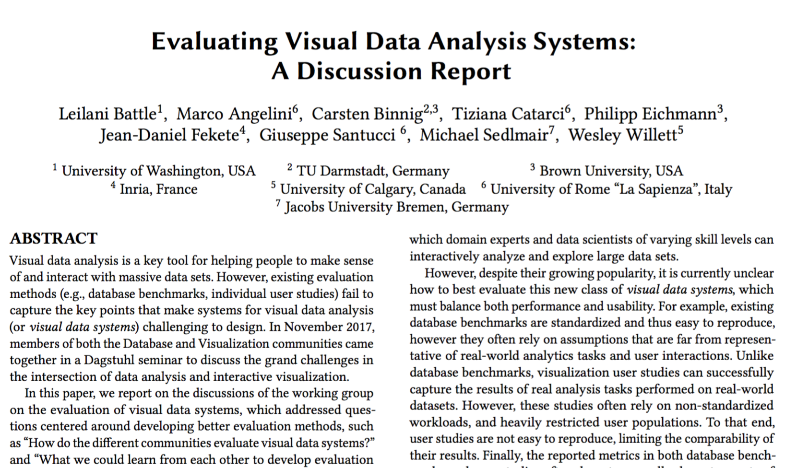

Evaluating Visual Data Analysis Systems: A Discussion Report

Venue. HILDA (2018)
Abstract. Visual data analysis is a key tool for helping people to make sense of and interact with massive data sets. However, existing evaluation methods (e.g., database benchmarks, individual user studies) fail to capture the key points that make systems for visual data analysis (or visual data systems) challenging to design. In November 2017, members of both the Database and Visualization communities came together in a Dagstuhl seminar to discuss the grand challenges in the intersection of data analysis and interactive visualization. In this paper, we report on the discussions of the working group on the evaluation of visual data systems, which addressed questions centered around developing better evaluation methods, such as 'How do the different communities evaluate visual data systems?' and 'What we could learn from each other to develop evaluation techniques that cut across areas?'. In their discussions, the group brainstormed initial steps towards new joint evaluation methods and developed a first concrete initiative - a trace repository of various real-world workloads and visual data systems - that enables researchers to derive evaluation setups (e.g., performance benchmarks, user studies) under more realistic assumptions, and enables new evaluation perspectives (e.g., broader meta analysis across analysis contexts, reproducibility and comparability across systems).
Link to this page: